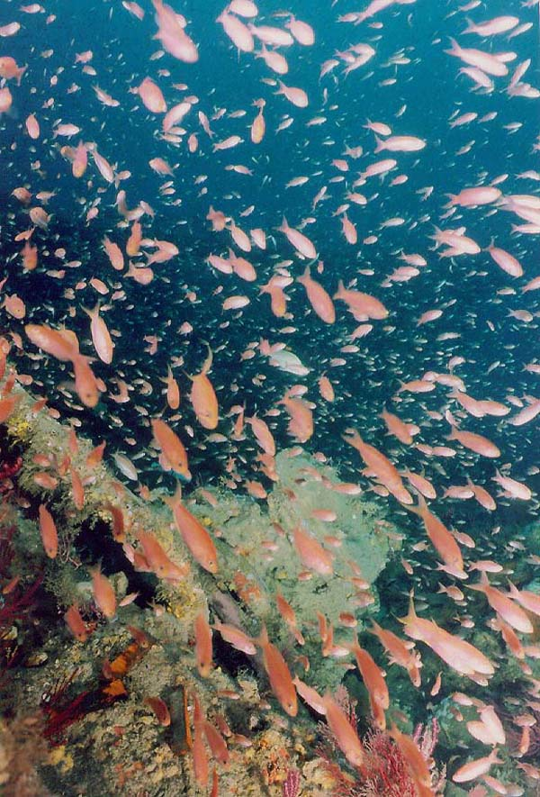
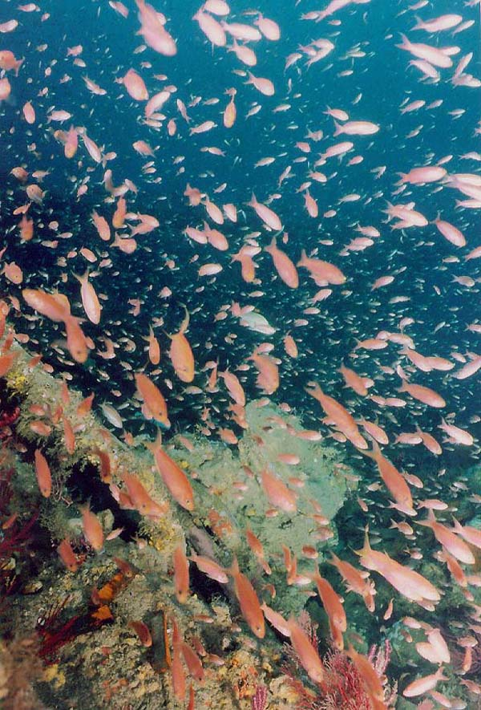
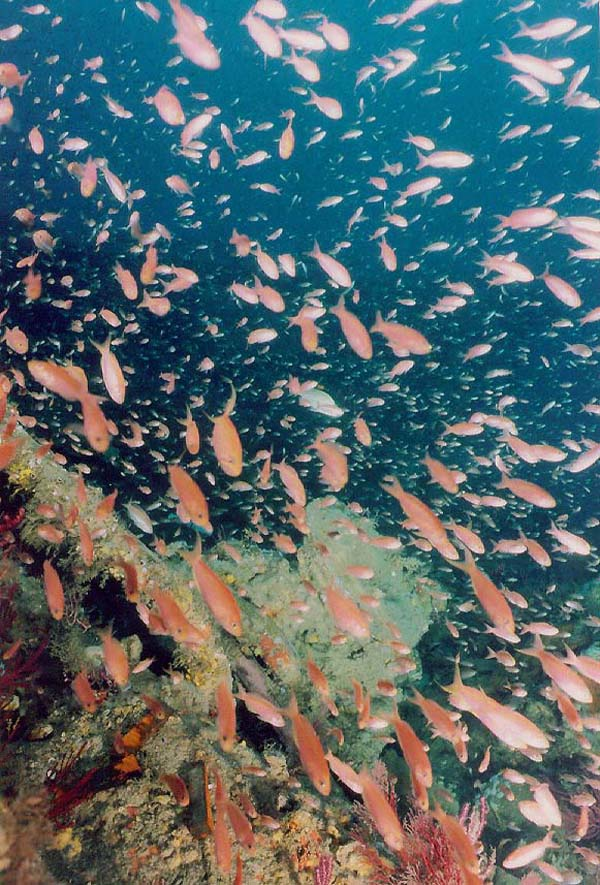
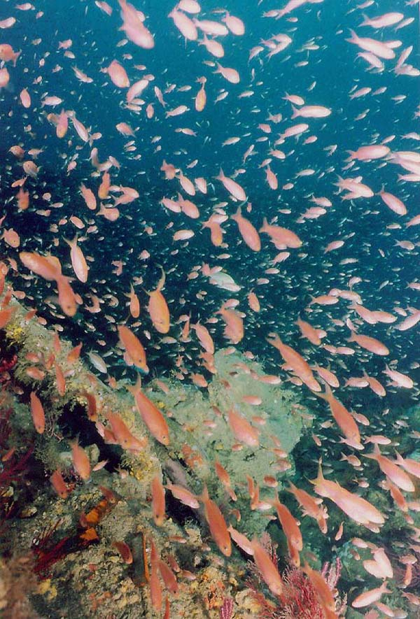

Why did you wobble? Your inner ear is fine. Your feet are fine. What changed?
Think about: Dark hallway with a single light vs. Dense forest with textured trees
If tau only works sometimes, why call it "information"?
 



 
